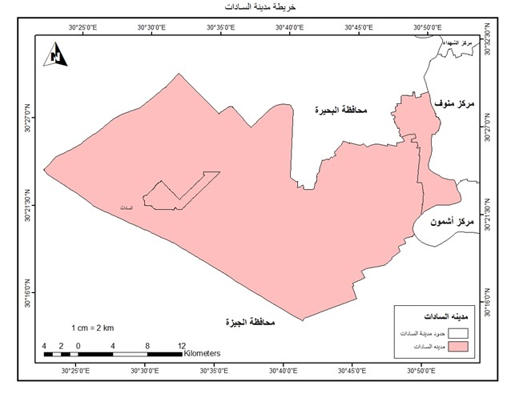
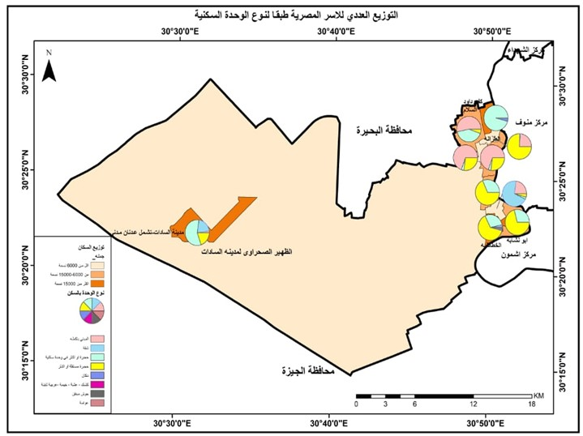
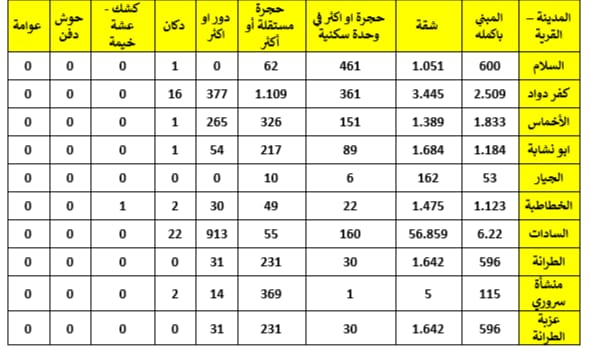
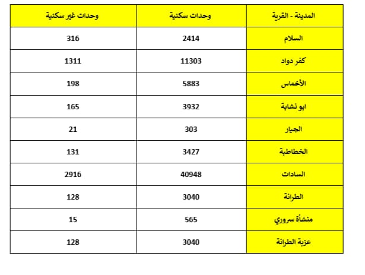
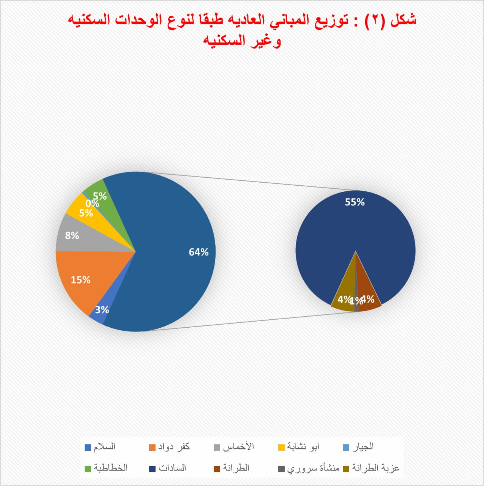
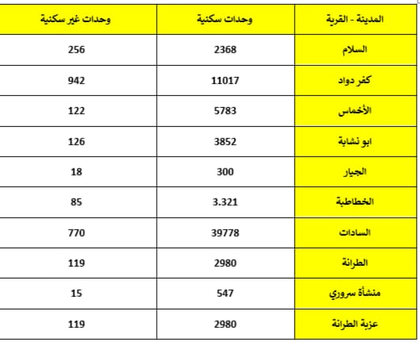
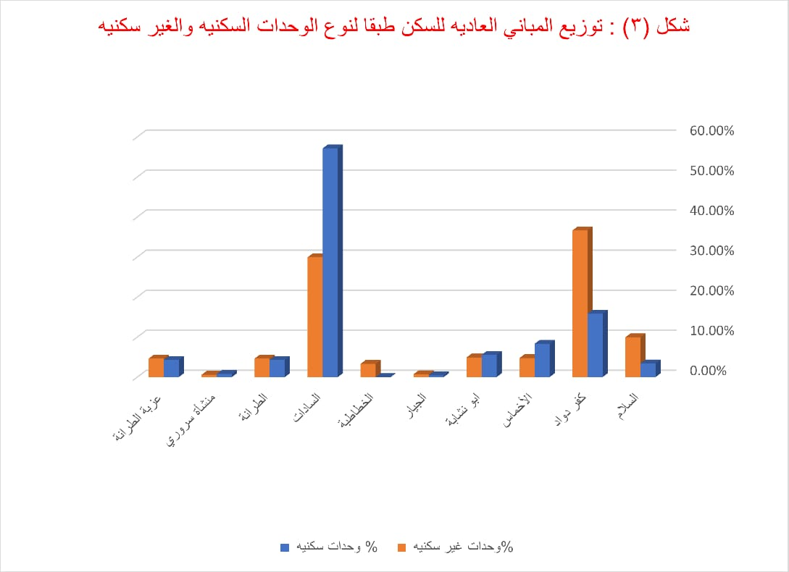

السادات مدينة في مصر تقع في شمال مصر وتتبع إدارياً لمحافظة المنوفية عاصمة السادات. هي مدينة الجيل الأول والثاني التي أنشأتها إدارة المجتمع العمراني الجديد عام 1976، وقد أصبحت مجتمعاً عمرانياً جديداً قائماً على الأنشطة الصناعية والزراعية والتجمعات السكانية وتقع وسط القاهرة والإسكندرية بجوار دلتا نهر النيل، تشتهر المدينة أيضاً بمساحاتها الخضراء الشاسعة، مما يجعلها وجهة للرحلات اليومية.
وندرس فية أعداد الاسر المصرية طبقا لنوع الوحدة بالمسكن و التوزيع للوحدات المباني العادية والعادية لسكن ، والعادية للعمل طبقا لنوع الوحدات السكنيه والغير سكنيه ويشمل ايضا التوزيع للاسر المصريه طبقا لجمله عدد الحجرات ومتوسط حجم الاسر ومعدل التزاحم .
اولا: التوزيع العددي لاسر المصريه طبقا لنوع وحده السكن
ثانيا: التوزيع العددي لوحدات المباني العاديه طبقا لنوع الوحداتالسكنيه والغير سكنيه
ثالثا: التوزيع العددي للمباني العاديه للسكن طبقا لنوع الوحدات السكنيه والغير سكنيه
رابعا:التوزيع العددي للمباني العاديه للعمل طبقا لنوعالحدات السكنيه والغير سكنيه
خامسا: الاستخدام الحالي للمباني
حيث نجد أن التوزيع العددي للأسر طبقاً لنوع الوحدات السكنيه يختلف من قرية إلى أخرى، ولذلك نجد أن قرية الأخماس تحتل المركز الأول من حيث المبني بأكمله 1833 ، ونجد أيضاً يقابل هذه القريه على الأقل في المبنى بأكمله قرية الجيار 53 ، ومن حيث الشقه نجد أن السادات أكبر من القري من حيث الشقق وذلك ب 56 1895 ويقابلها في الأقل من حيث الشقق قريه المنشاه سروري خمس شقق سكنيه ومن حيث الحجر نجد ان قريه كفر داود هي اعلى القرى ب 361 حجره ويقابلها في الاقل من حيث الحجر منشاه سروري بحجره واحده ونجد ان قريه كفر داود تحتل المركز الاول من حيث الحجر المستقله ب 1109 حجره مستقله ويقابلها قريه الغيار من اقل الحجر المستقله ب10 حجر مستقله من حيث الدور الواحد نجد ان اعلى قريه هي في قريه السادات 319 دور ويقابلها أقل قريه قريه السلام و قريه الجيار لا يوجد بها ادوار سكنيه اما من حيث الدكاكين التي توجد في مدينه السادات نجد ان السادات تحتوي على 22 دكان ويقابلها في الاقل قريه الجيار وعزبه الطرانه وتحتل قريه الخطاطبه المركز الاول ويوجد بها كشك واحد ام من حيث الحوش الدفن والعوامه لا يوجد في ال10 قرى .
 حيث نجد أن التوزيع العددي لوحدات المبنى العادية طبقا للنوع الوحدات السكنية يختلف من السكنية والغير سكنية حيث نجد أن السادات تعد من أعلى الوحدات السكنيه في ٤٠٩٨٤ وحده سكنيه بينما من حيث الأقل للوحدات السكنيه قريه منشاه سروره 565 وحده سكنيه وذلك ايضا نجد من حيث الوحدات الغير السكنيه نجد ان السادات تحتل المركز الاول ب 2916 وحده غير سكنيه ويقابلها من حيث اقل قريه في الوحدات الغير سكنيه منشاه سروري ب 15 واحده
 حيث نجد أن التوزيع العددي لوحدات المبنى العادية طبقا للنوع الوحدات السكنية يختلف من السكنية والغير سكنية حيث نجد أن السادات تعد من أعلى الوحدات السكنيه في ٤٠٩٨٤ وحده سكنيه بينما من حيث الأقل للوحدات السكنيه قريه منشاه سروره 565 وحده سكنيه وذلك ايضا نجد من حيث الوحدات الغير السكنيه نجد ان السادات تحتل المركز الاول ب 2916 وحده غير سكنيه ويقابلها من حيث اقل قريه في الوحدات الغير سكنيه منشاه سروري ب 15 واحده
 حيث نجد توزيع العددي للمباني العادية والجوزية ومبني غير واضح المعالم طبقا للاستخدام فكانت قرية السادات اكثر القري التي حازت علي اكبر عدد من المباني العاديه طبقا لاستخدام السكان بها فيقدر بحوالي ١١.٨٣١ مبني, كما حازت ايضا علي اكبر عدد من المباني الجوزية ويصل عددها الي ١١٢ مبني , وكانت قرية كفر دواد أكثر القري التي حازت علي اكبر عدد من المباني غير واضحه المعالم طبقا لاستخدام السكان بها فيقدر بحوالي ٢٢٦ مبني , أما قرية الجيار فهي أقل القري التي بها مباني عادية ويقدر عددها بحوالي ١٧٠ مبني فقط وأيضا المباني الجوزيه بها كانت مبني واحد والمباني غير واضحه المعالم كانت ٣ مباني فقط , قرية منشأة سروري كانت خالية تماما من المباني الجوزية وأيضا المباني غير واضحه المعالم.